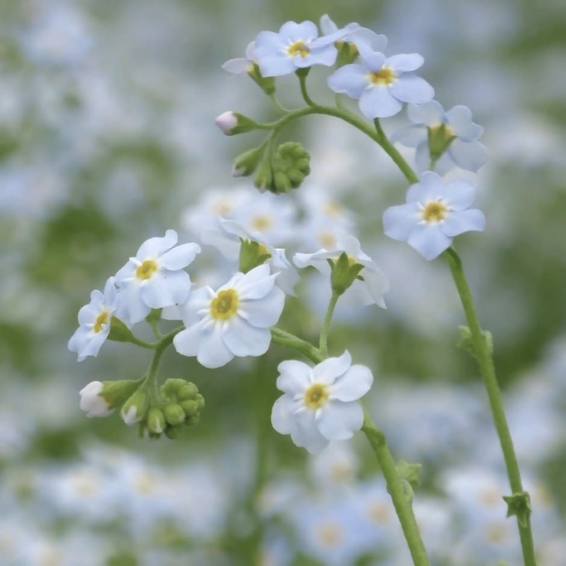

sophhh小猫🍥
@sophhhsama
「勿忘我、勿忘我，本来的意思是让那些情侣们不要忘了彼此最开始的那份爱意，但苏雨晴买给自己，却还有别的一番含义。
不忘初心，不要忘了自己最初的梦想，不要被现实的残酷给磨灭……」
这些蓝色的小花就是勿忘我花…
很可爱吧喵！
勿忘我花的花期刚好是三月至六月呢。
现在的难过就像是一场倒春寒，虽然有点冷，但那是为了让我们开得更漂亮呢
勿忘我，不仅是勿忘爱人，也是苏雨晴在提醒我们：勿忘爱自己
最近的天气可能有点冷，但请相信，花期一到，我们都会开出最温柔的蓝色。我们要一起活下去，去看六月的海 ( ´･･) ﾉ(._.`)
小猫上
节录自【药娘的天空-22勿忘我】
